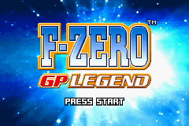

F-Zero GP Legend

Complete on 2018-6-12
4 / 5
Release Date: Sep 20, 2004
Meta Score: 77
Screenshots

Notes
F-Zero is a series of fast and futuristic anti-gravity arcade racing games. There have been quite a few of these, starting with F-Zero on the SNES.F-Zero GP Legend is one of 2 F-Zero titles on the GBA. It didn't get as good review scores as the other, F-Zero: Maximum Velocity.
It's an arcade racer, you accelerate, steer (with air brakes for drifting), and try to avoid crashing too much. You can boost, with a meter that gets refreshed by driving over certain parts of the track. You also have a health bar and lose if it runs out. Your ship can be repaired by driving over other sections of the track. It's pretty fun, controls are decent, and the AI is usually competetive.
Graphically, it's 3D with mode-7 style stretched sprite graphics. Looks OK, with a good draw distance compared to some of the polygonal 3D games like Need for Speed. There's a nice variety in the ships too. The only problem is that the tracks are all flat and can look a bit sparse.
The game actually has a story mode, telling intertwining stories about different F-Zero racers. It's a kind of faintly cyberpunk sci-fi story, with bounty hunters tracking down criminals. Of course, everyone resolves their problem by having F-Zero races. The races in this mode are just races with slightly different objectives, like racing to the end of one lap of a long twisty track, or just a normal race, nothing amazing. I played to the completion of one of the character's story which brought up the credit. This didn't take too long, but there are multiple other unique stories for other characters.
Overall, F-Zero is a pretty fun game on the GBA, even if it's not quite up to the intensity of the home console versions.